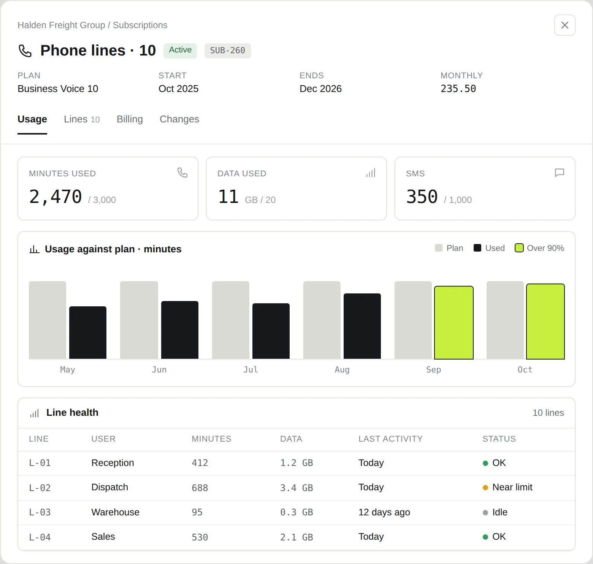
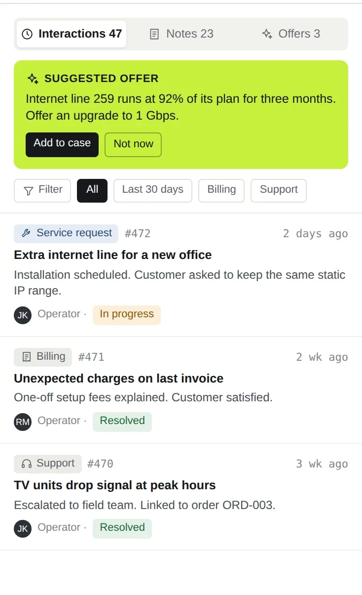
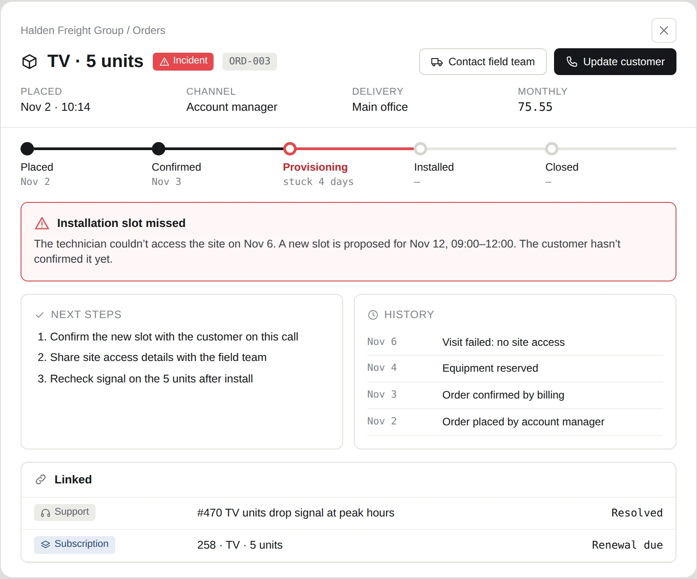

01
Details open in a drawer over the account, not on a new page.

Operators at a global telecom software provider looked up every caller in four separate subsystems while the customer waited. Starting from the operators themselves, we rebuilt the workspace around the call.
The key question
Can an operator act on everything about a customer from one screen, without that screen becoming unreadable?
Where it started
Billing, CRM, orders and service each had their own search and their own key. Nothing linked them, so operators assembled the picture by hand, mid-call.
What we decided



Every screen and edge case handed over. Ready to build.
Delivered by Sensum’s founders while at a global engineering consultancy. Screens are redesigned and anonymised, and the figures in them are illustrative.